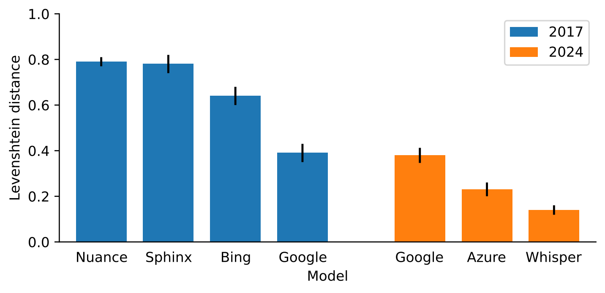
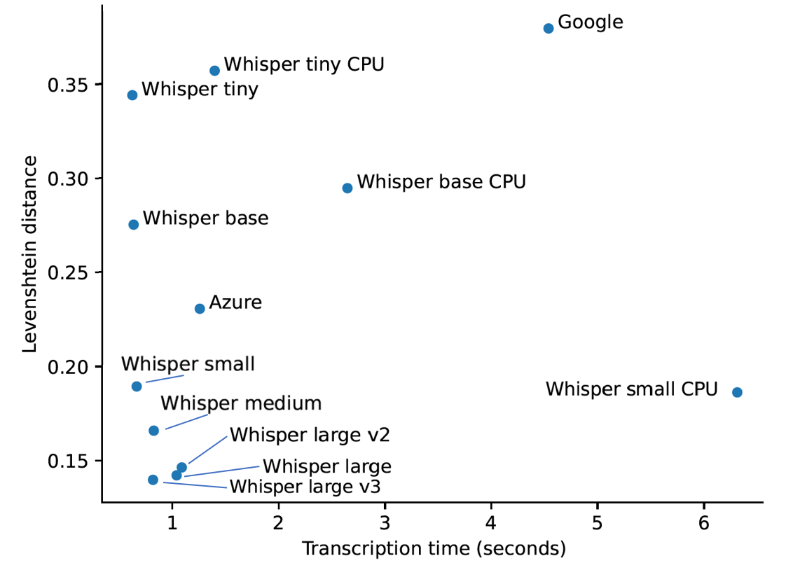
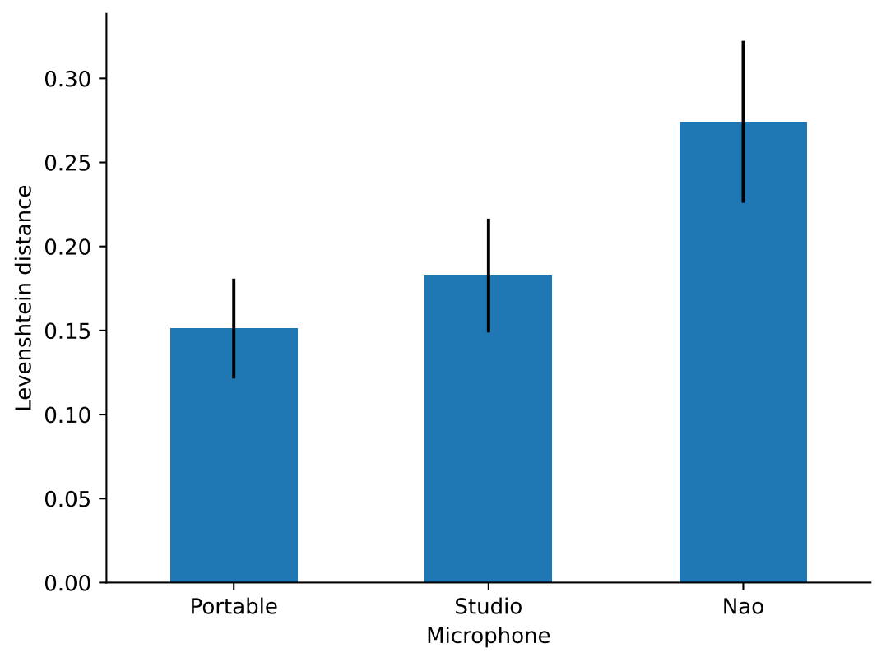

Child Speech Recognition
Child speech is very different from that of adults: higher pitch, more disfluencies, grammatical mistakes. And while Automatic Speech Recognition (ASR) performs impressively for adults, it has been shown to be very unreliable for young children (Kennedy et al., 2017), hindering child-robot interaction. The past seven years have brought many new advances in deep learning, such as the Transformer architecture. Those advances also helped to improve ASR systems: OpenAI’s Whisper model is an example of this. However, the question remains: has this also improved ASR performance for children?
We repeated Kennedy et al.’s experiment from 2017 with the state-of-the-art ASR systems available today. Their dataset contains speech from 11 children from English primary schools, around 5 years old. Each child repeated 5 sentences spoken by the experimenter, but also produced spontaneous speech by retelling a story from a picture book, resulting in 222 spontaneous speech utterances. We compare the performance of the 2024 ASR systems provided by Google and Microsoft Azure as well as OpenAI’s Whisper model when transcribing these children’s speech samples.
Recommendations
Based on this experiment, we provide three recommendations for anyone looking to use automatic speech recognition in child-robot interactions:
-
Child speech recognition works. Mostly, especially comparing to 2017. Adult-like recognition is not yet available, but the best model recognizes 60% of utterances correctly, barring small grammatical differences, compared to 20% in 2017. However, very short and very long utterances remain a problem.

-
Prime your models. Most speech recognition models can be primed or prompted to expect certain utterances. This can strongly boost performance. For samples containing a single number, priming boosted accuracy from 40% to 72%. For short sentences, perfect accuracy can even be achieved in a multiple-choice setting.
-
Use a locally hosted model. The responsiveness is significantly better than that of cloud-based solutions, and they can even outperform cloud-based solutions in accuracy.

-
Use an external microphone. It significantly improves recognition performance, regardless of the quality of the microphone, as opposed to using a microphone that is embedded in the robot.

Examples
But what do these performance increases actually mean? Get an impression with the following examples:
-
Spontaneous speech
In this clip, the child is retelling a story from a picture book.
- Ground truth: “then the boy fell over and all of the bees was flying”
- Whisper: “Then the boy fell over and all of the bees.”
- Azure: “Then the boy fell over and all of the bees”
- Google: “in the boy fell over and all of the beast was was flying”
-
Another spontaneous speech clip
- Ground truth: “and then they fell to the water”
- Whisper: “And then they fell through the roof, huh?”
- Azure: “And then?”
- Google: “defer to the water”
-
Sentence with loud background noise
In this clip, the child is repeating a sentence spoken by the experimenter. You can hear a lot of background noise, because the sample was recorded in a school, but also because it was recorded using the microphone that is embedded in a Nao robot, so robot’s fans are making a lot of noise that is audible in the clip.
- Ground truth: “The dog is on top of the shed”
- Whisper: “The dog is a dog of the sun”
- Azure: “The dog is on top of the set.”
- Google: “The dog is on top of the set.”
Paper and contact
If you want to know more about this research, read our paper, which will be presented at the 2024 International Conference on Social Robotics!
We informally presented an earlier version of this work at the 2024 Symposium on Technological Advances in Human-Robot Interaction. Although not officially published, that version of the paper is still available here.
Feel free to get in touch if you have any other questions or want to know more! You can use any of the channels at the bottom of this page, or send an email to ruben[dot]janssens[at]ugent[dot]be.
If you use our work in any future research, please use the following citation:
@inproceedings{janssens2024child,
author = {Janssens, Ruben and Verhelst, Eva and Abbo, Giulio Antonio and Ren, Qiaoqiao and Pinto Bernal, Maria Jose and Belpaeme, Tony},
title = {Child Speech Recognition in Human-Robot Interaction: Problem Solved?},
year = {2024},
booktitle = {2024 International Conference on Social Robotics},
}